73原画又双叒叕强调了“出轨科学家”的梗，然而这个新人设暂时没有足够的剧情支撑使它真正成为记忆点，只有73单薄的反复强调，所以不难猜出它的作用主要在后期。你哀有很多剧抛（或者说是没有强调）的标签，如眼神凶恶的哈欠女，傲娇，来自黑衣组织的女人，为什么单单强调浮気科学家？本文主要是对其作用的猜测和挖掘其中隐藏的磕点
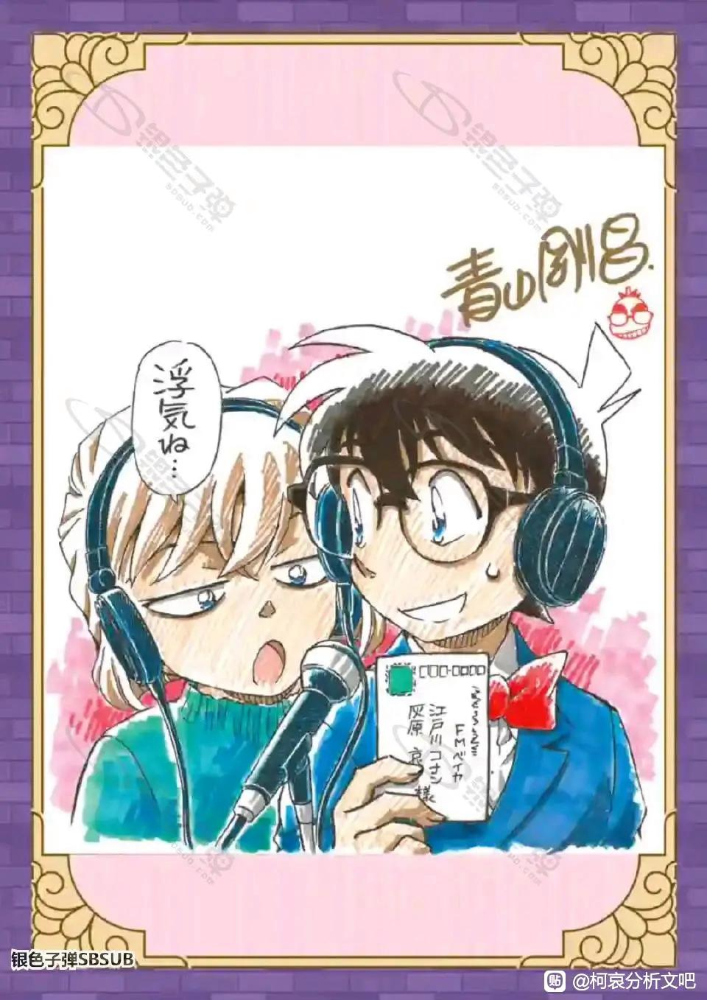
首先，我们结合恋爱喜剧漫画家青山刚昌笔下女主角和他本身高度自恋的化身优作的妻子工藤有希子，前期人设（或者说是理想状态，没有崩坏前）共通点就是有轻松搞笑点卖点，例如毛利兰的空手道，青子拿鱼吓唬基德，有希子的换装和八卦。和名柯人设相似的金田一事件簿中，女主美雪的作用也是来缓解恐怖严肃的推理气氛。从中也可以看出日本漫画家的大男子主义，お茶番也就说搞笑出洋相是女主作用，来衬托男主高光。当然，适当的搞笑也可以算是女主的魅力之一，73笔下有希子塑造的就很生动可爱
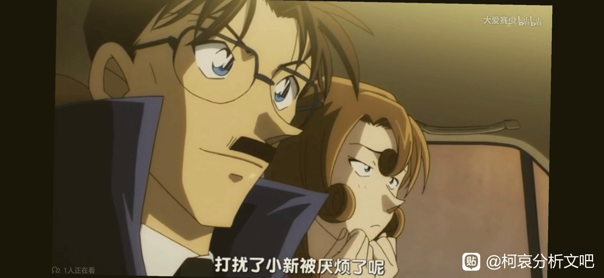
2023-11-03 23:41 | 贴吧用户_5726KyK:哀就是越来越像有希子了嘛2023-11-04 00:17 | 永恒moon的海角:回复 贴吧用户_5726KyK :有希子化＋林原惠美化
呕吼，赶上直播吗
2023-11-01 23:07 | 永恒moon的海角:赶上啦
而早期的灰原哀身上很难插入这种搞笑萌点，因为它和哀早期高冷神秘人设相冲，所以你哀和少侦与博士捆绑出镜，也是需要少侦在其中扮丑角，博士的猜谜水时长。所以灰原哀人设变动，肯定是73深思熟虑下的决定，他是懂得珍惜人物羽毛的，他在创造哀的时候就知道这个人设会多么吃香，所以为什么他要冒险去改变大卖了20年的人气人设呢？
简单来说，他要给灰原哀抬咖。因为女配角和女主角在推动剧情中的作用是不一样的（尤其是在名柯这种日常剧情占大多数的），我们可以定义灰原哀为主线女主，但是不得不承认在日常线中哀的存在感不如兰。之前吧内大佬分析过兰与哀的区别中有，兰会主动吸引柯南和读者的注意力，而哀总是默默助攻和提供线索的作用。
简单来说，他要给灰原哀抬咖。因为女配角和女主角在推动剧情中的作用是不一样的（尤其是在名柯这种日常剧情占大多数的），我们可以定义灰原哀为主线女主，但是不得不承认在日常线中哀的存在感不如兰。之前吧内大佬分析过兰与哀的区别中有，兰会主动吸引柯南和读者的注意力，而哀总是默默助攻和提供线索的作用。
蹲蹲
而早期的灰原哀身上很难插入这种搞笑萌点，因为它和哀早期高冷神秘人设相冲，所以你哀和少侦与博士捆绑出镜，也是需要少侦在其中扮丑角，博士的猜谜水时长。所以灰原哀人设变动，肯定是73深思熟虑下的决定，他是懂得珍惜人物羽毛的，他在创造哀的时候就知道这个人设会多么吃香，所以为什么他要冒险去改变大卖了20年的人气人设呢？
简单来说，他要给灰原哀抬咖。因为女配角和女主角在推动剧情中的作用是不一样的（尤其是在名柯这种日常剧情占大多数的），我们可以定义灰原哀为主线女主，但是不得不承认在日常线中哀的存在感不如兰。之前吧内大佬分析过兰与哀的区别中有，兰会主动吸引柯南和读者的注意力，而哀总是默默助攻和提供线索的作用。
简单来说，他要给灰原哀抬咖。因为女配角和女主角在推动剧情中的作用是不一样的（尤其是在名柯这种日常剧情占大多数的），我们可以定义灰原哀为主线女主，但是不得不承认在日常线中哀的存在感不如兰。之前吧内大佬分析过兰与哀的区别中有，兰会主动吸引柯南和读者的注意力，而哀总是默默助攻和提供线索的作用。
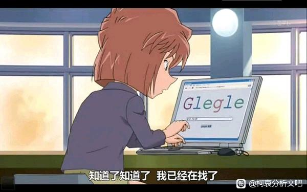
2023-11-02 03:39 | AYUnbelievable:哀当背景板也比兰在那大喊大叫吸引我的注意力2023-11-02 03:58 | 永恒moon的海角:回复 AYUnbelievable :那必然，不过萝卜青菜各有所好，不然就不会有那么多sr了，也会有人吃这种大喊大叫的萌点。

而给哀按上追星族和出轨科学家的标签，虽然招了一波黑，但是73从结果上看是大成功的！当时铺天盖地的讨论哀人设崩塌，然后慢慢接受消化哀的人物成长，大众的焦点无疑是在灰原哀身上的。他就是想给你欧亨利那种被创的冲击（没想到当年吓哭小孩的组织成员去追星了吧），然后悄眯眯的把灰原哀这个角色推出去。而对比毛利兰，除了降智的打电话情节，近期并没有留下记忆点的人设。
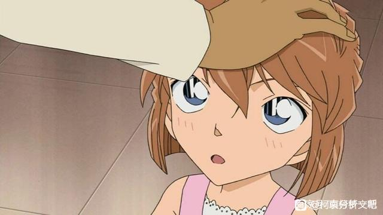
出轨科学家与其他标签不同的是，它有很强的联动性和目的性。名柯最不缺的就是情侣和跟情侣相关的事件。而且也不缺73恶趣味的大三角，比如引起热议的平和红叶还有柯哀兰，这个标签能打破平和与新兰（柯兰）捆绑出镜的局面。就像是追星能让毛利大叔和灰原哀梦幻联动一样，你会发现除了目前不可能再复刻的高校日常，哀可以不突兀的融入任何日常线。对比满月篇兰强行闯主线，这个安排我认为是十分巧妙的。可见73的用心程度。而且更乐观推测一下，哀甚至可以主动发起案件，后期会有真正柯哀主场办案，不需要借助少侦和园子钞能力。然后我们再把眼光放长远，如果哀恢复志保形态，不需要装小孩，可能会失去萌点，想想18岁的科学家小姐姐一本正经地说是出轨了。可以很好的缩短与读者的心理距离，更好代入剧情。日漫主角大多数是高中生也就是考虑方便代入。
2023-11-02 05:59 | 长大后可水了:这个想法不错，需要一个萌点让哀切换到志保的时候不觉得突兀，稍稍铺垫一下志保的人设2023-11-02 11:34 | 谢无妄º:这个分析可以诶
兰：连日常线的戏份都要被抢走，那种事情不要啊
2023-11-02 03:15 | 永恒moon的海角:73：怕亲闺女出场累着
再看m26涉及主线的剧情，你会发现灰原哀还是原先那个冷静聪明的深入人心的形象，就像柯南既能办案设局踢飞机，又能吐槽搞笑一样，哀的人设也更加立体了，可以说是林原惠美化？只有这种形象才能让读者轻松的过柯哀年，广播的总基调是轻松的，Q版外传也需要大量的梗来水。
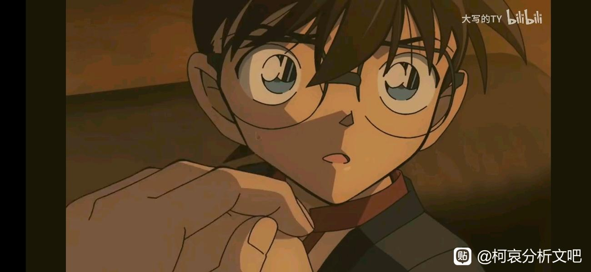
有理有据柯哀能大量写日常线也能进一步压迫兰上线的可能，刚圣这是不打算藏了
柯哀能大量写日常线也能进一步压迫兰上线的可能，刚圣这是不打算藏了2023-11-02 03:14 | 永恒moon的海角:毕竟一年出几篇，再藏真的藏一辈子了hhh 希望柯哀加速发糖
磕点：你哀兴趣与人设与某侦探的高度联动且自洽 。灰原哀为什么会追星？因为蜗壳按头安利（物理意义上）再加上柯南讲的比护小故事，让她与比护共情想要共同努力那种，而且很难说里面没有掺杂足球篇被柯南追车打动的成分在里面。你喜欢一个爱豆，可能不仅单纯是喜欢这个人，而是喜欢跟他相关的故事和看向他的感觉。总之，足球可以算是柯哀共同爱好之一。出轨科学家则是更加明显，早期哀对啥都是听完壳子一顿讲解，风轻云淡的说一句“我没兴趣”，尤其是对人，到现在高度在意名柯cp，甚至和少侦一路推进警局的那几对，和蜗壳爱去牵线也息息相关（尤其是爱去警局）。而且柯南从来没有给哀泼过冷水，都是宠着让她闹。甚至调动红方去找挂件，然后找到了再自己补个标记。
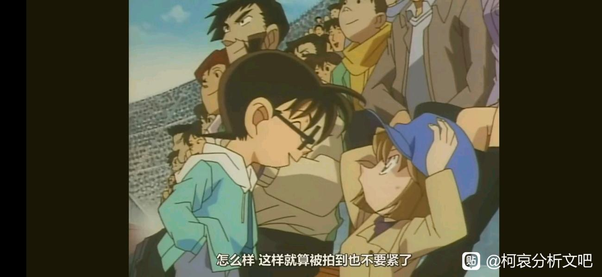
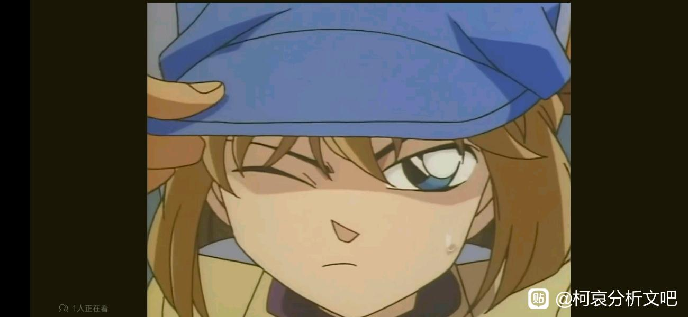
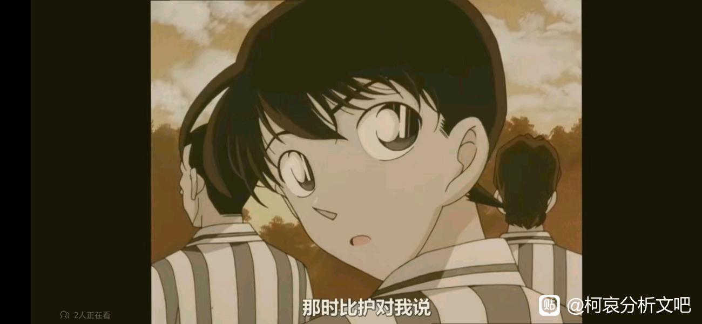
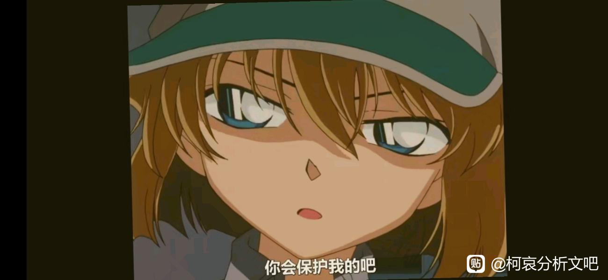
反之哀对壳子的推理从早期就表现出来很感兴趣，当柯解开一些她认为不可解的事件时很惊艳，到后期辅助和一看到柯子笑就知道问题解决了。哀自身的推理能力也是能像有希子一样撑起台面的。哀科学家人设，在推理剧情上多次成为主要突破口，所以柯哀的兴趣基本上是自洽互补的。
而漫画中情侣之前兴趣比较冲突的典范也很明显。当然，兴趣没有高低之分，看情侣之前如何磨合，是否互相尊重。新一对兰的空手道比较了解，会知道道服的一些规则（就跟哀对推理小说也很了解一样），主要是出自知识面广，但是比起看兰的空手道比赛他会优先选择事件。而早期兰对新一的推理狂的怨气，这个很多大佬也分析过了。这几天我重温新第一集，新兰给我的感觉就是哪怕新一不变小，也是注定会愈行愈远的一对，而新一变小反而成全新兰，让她们永远暂停在最暧昧的时刻，但是一旦确认关系，这段感情有多脆弱就不必赘述了。
而漫画中情侣之前兴趣比较冲突的典范也很明显。当然，兴趣没有高低之分，看情侣之前如何磨合，是否互相尊重。新一对兰的空手道比较了解，会知道道服的一些规则（就跟哀对推理小说也很了解一样），主要是出自知识面广，但是比起看兰的空手道比赛他会优先选择事件。而早期兰对新一的推理狂的怨气，这个很多大佬也分析过了。这几天我重温新第一集，新兰给我的感觉就是哪怕新一不变小，也是注定会愈行愈远的一对，而新一变小反而成全新兰，让她们永远暂停在最暧昧的时刻，但是一旦确认关系，这段感情有多脆弱就不必赘述了。
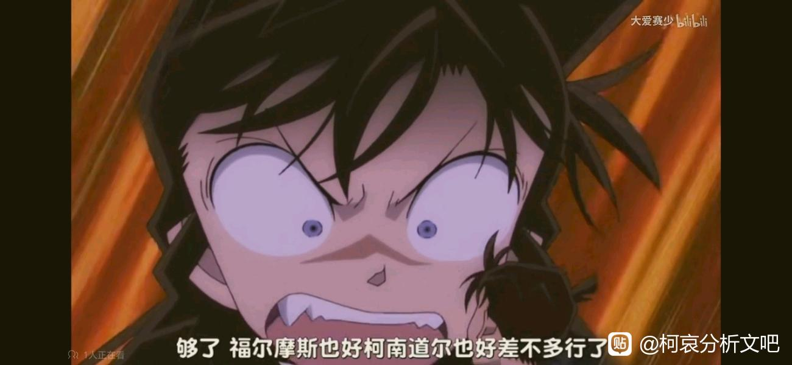
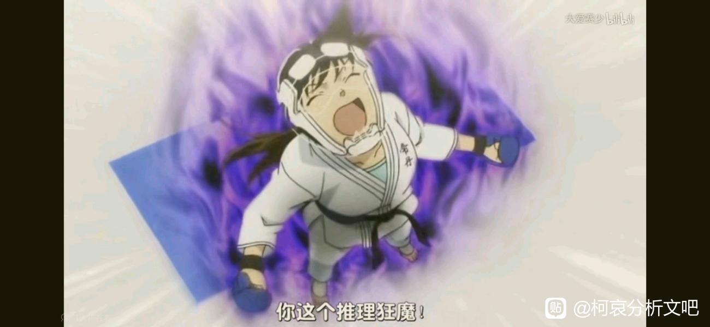
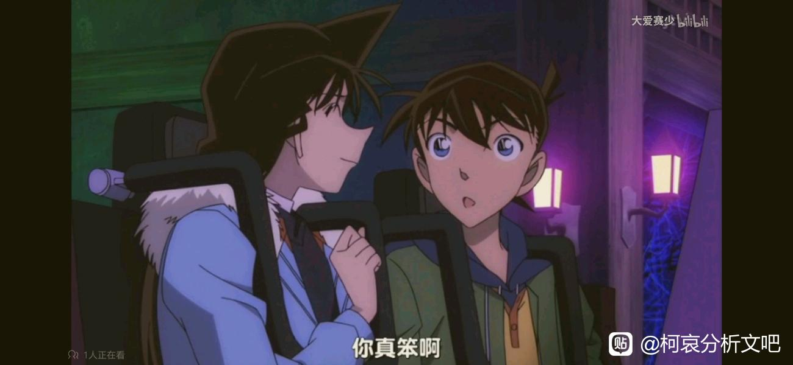
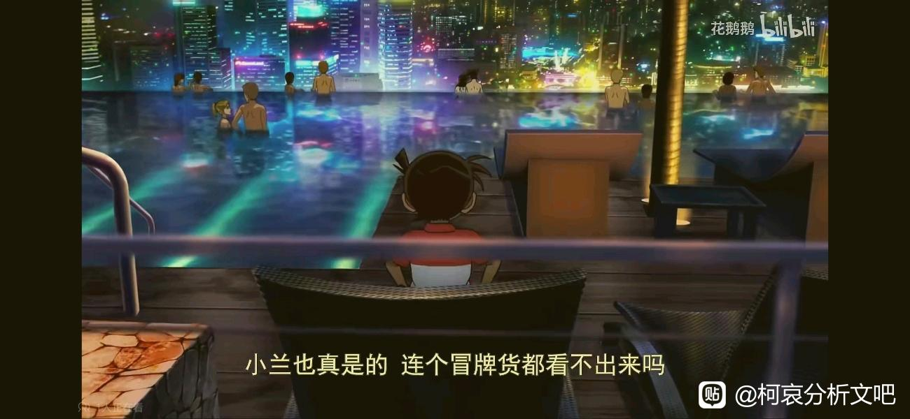
最后祝有情人终成眷属
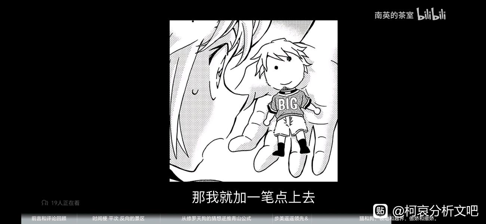
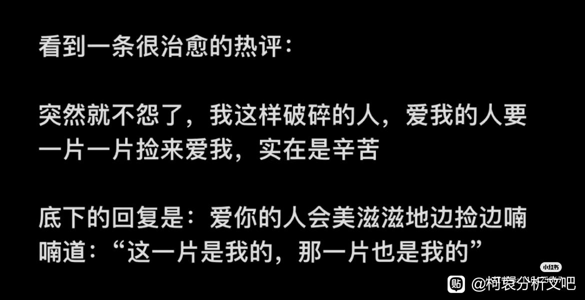
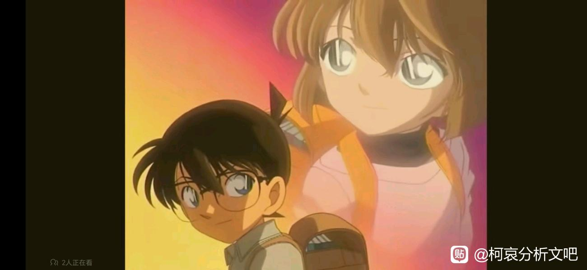
2023-11-03 23:53 | 贴吧用户_QC7XaCG:这一组图真的绝绝子~2023-11-04 00:16 | 永恒moon的海角:回复 贴吧用户_QC7XaCG :hhh最近磕柯哀太上头啦！这种爱情真的好美好
好帖！顶
2023-11-02 03:58 | 永恒moon的海角:


我觉得可以从“猎杀恋爱的鲨鱼”这个方向上考虑，一楼两人是标准双鲨配色，柯南不用说，蓝西服红领结象征鲨鱼猎杀时刻（破案时红领结变声器要放在嘴攰）；哀这一身蓝一一悲，出轨研究家至今没成功过，一点红也没咬住过
2023-11-02 05:04 | 永恒moon的海角:这个颜色感觉蓝绿湖蓝那种的？勉强算是双鲨吧hhh，两只爱凑热闹的八卦鲨鱼。出轨研究家主要是为了搞笑，抓小三有隔壁大婆教代劳，真成功了不是打73自己的脸吗，可能后期我猜测可以逮新兰。“灰原，我爱你，但是我跟兰还在交往”(bushi)喜闻乐见的白学2023-11-02 05:07 | 索尔-卡缇:回复 永恒moon的海角 :应称为“青色”白鸟佐藤相亲那篇里提到过，有些老人也称绿色为“青色”2023-11-02 05:18 | 永恒moon的海角:回复 索尔-卡缇 :一身青色应该不是悲的象征吧，感觉73还蛮喜欢青色，还有一个叫青子的女主角，女主色无疑了2023-11-02 05:24 | 索尔-卡缇:回复 永恒moon的海角 :吧里有人提出“柯哀实际是青，新兰实际是红”我受启发提出“柯哀是用红连接的青，新兰是用青连接的红” 然后我有了个回旋镖M1的想法：“连接新兰的青被兰剪断了，连接柯的红被哀（恋爱的鲨鱼）叼走了”2023-11-02 05:25 | 索尔-卡缇:回复 永恒moon的海角 :后边刚圣要是再给兰加上个“送不到的蓝（青）色护身符”剧情
😁
看到新预告感觉兰很有可能会去约基德约会，柯南天天听着哀喊出轨出轨，你猜他会怎么想
快兰即将进入漫画
2023-11-02 08:18 | 永恒moon的海角:除了新兰，73什么都会搞
什么是出轨？如图所示
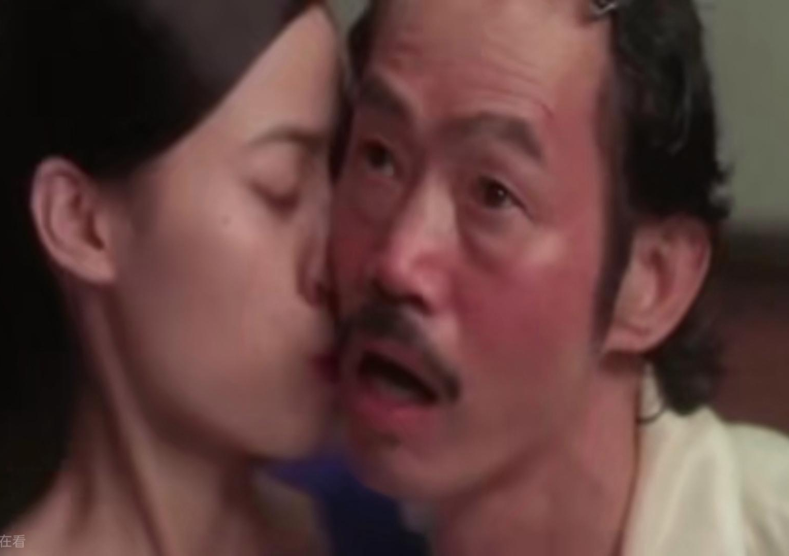
emmmm，柯妈看见过柯爸衣领有红色印记，小柯跟包租公脸上的同一个位置有唇印跟包租公确实很相似，醉醺醺+可见女人的痕迹，柯妈和包租婆看见之后都很生气。
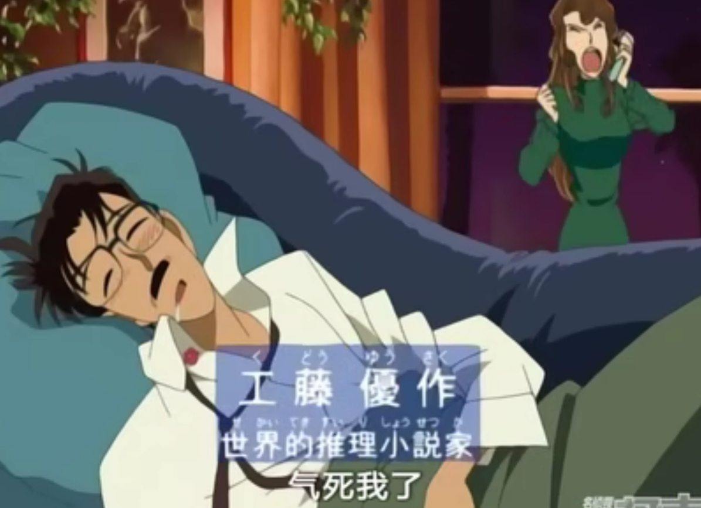
小柯脸上的印记还没被清算，要么他识趣点快点清理掉，要么就等着哀收拾他
2023-11-02 09:47 | 永恒moon的海角:没等哀出手，柯爸就来封号了，基德甚至窜台来恶心小柯，73你真的不是亲爹吗。看广播里小柯的怂样怕是根本不敢惹，妻管严预定

机会这不就来了

2023-11-03 00:05 | 永恒moon的海角:最新话是柯哀一起磕降压药的新高度2023-11-03 01:17 | 撩妹有糖吃😘:回复 永恒moon的海角 :2023-11-03 07:26 | 永恒moon的海角:哀哀可能会很激动，毕竟最近出轨研究家很上头
回复 撩妹有糖吃😘 :有人出轨了？激动！新一又上直播了？直接拥过去。蜗壳又要挨揍了
dd，楼主分析的好棒。给哀增添新标签，是最能直接体现人设变化、最快与人物及日常建立连接的方法。哀也在这些改变下，对融入周遭生活的主动性不断增强了。虽然在名柯整体都在下降的深度和画风下，显得有些突兀，但越能融入日常，出场的机会才能越多嘛，总体来说还是很用心了。梦一个M27哀能有5分钟以上的戏份
。给哀增添新标签，是最能直接体现人设变化、最快与人物及日常建立连接的方法。哀也在这些改变下，对融入周遭生活的主动性不断增强了。虽然在名柯整体都在下降的深度和画风下，显得有些突兀，但越能融入日常，出场的机会才能越多嘛，总体来说还是很用心了。梦一个M27哀能有5分钟以上的戏份2023-11-02 23:21 | 永恒moon的海角:结合最新话可以看出73是真的很急推剧情，近年哀戏份肯定不会少，毕竟是流量担当嘛，是那种导演都会求着73多画一些的热度